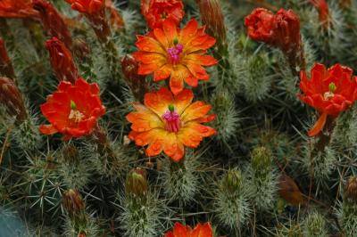

Explora la rica diversidad de flora y fauna que ofrece esta encantadora ciudad
Maravíllate con la Flora de Madera

La ciudad de Madera, Chihuahua, se encuentra rodeada de una rica variedad de flora. Disfruta de la belleza de especies como el Pino Piñonero, el Encino, el Junípero, el Mezquite y el Álamo.
Descubre la Fascinante Fauna de Madera
La fauna en Madera es igualmente diversa y fascinante. Podrás encontrar especies como el Puma, el Cuervo de Chihuahua, el Ciervo de Cola Blanca, la Liebre y el Coyote.
Preservando la Naturaleza
En Madera, se llevan a cabo programas de conservación para proteger la flora y fauna local. Estos esfuerzos son fundamentales para preservar los ecosistemas y garantizar la continuidad de las especies en peligro de extinción.
Para obtener más información sobre los programas de conservación en Madera, visita nuestro sitio de conservación.
Vive Experiencias Únicas
Sumérgete en las experiencias de los habitantes locales de Madera y sus encuentros con la vida natural. Sus historias y testimonios reflejan la conexión profunda y el respeto por la flora y fauna de la región.
En Madera, se fomenta la educación ambiental para promover el cuidado de la naturaleza y la adopción de prácticas sostenibles. Aprende sobre la importancia de la conservación y descubre cómo puedes contribuir a proteger el entorno natural.
Consulta nuestra sección de educación ambiental para obtener más información.
Galería de Imágenes
Testimonios
"Explorar la belleza natural de Madera ha sido una experiencia transformadora. Me siento conectado con la naturaleza de una manera que nunca antes había experimentado."
- Juan Pérez
"La diversidad de flora y fauna en Madera es impresionante. Cada vez que visito, descubro algo nuevo y fascinante. Definitivamente, es un lugar único."